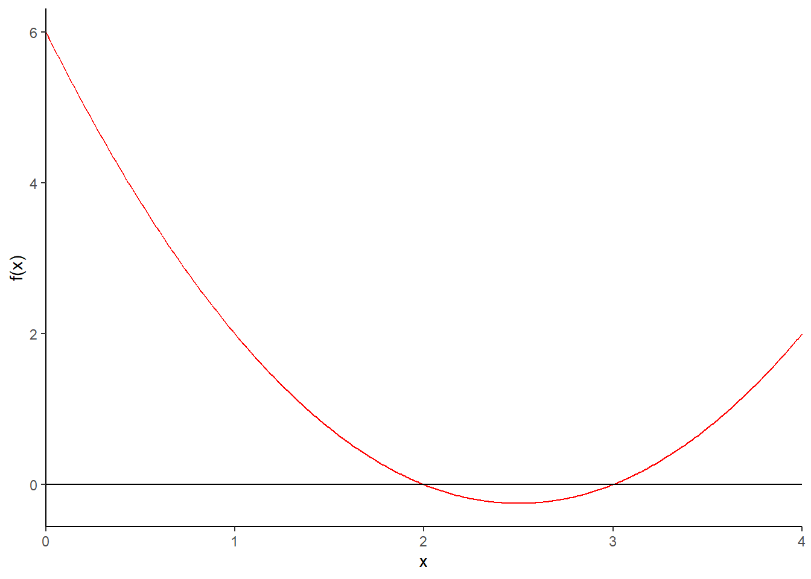
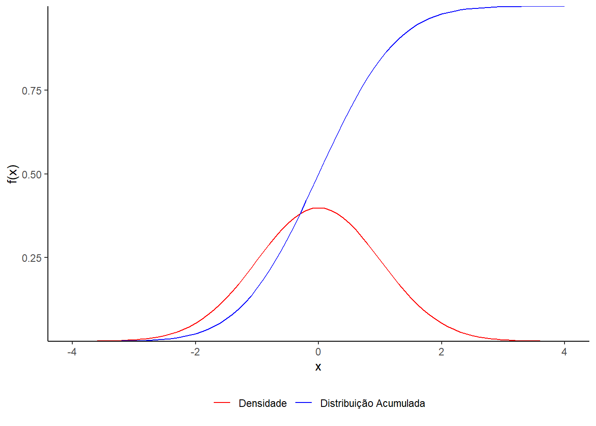
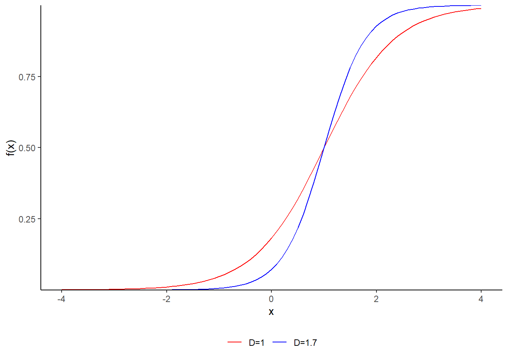
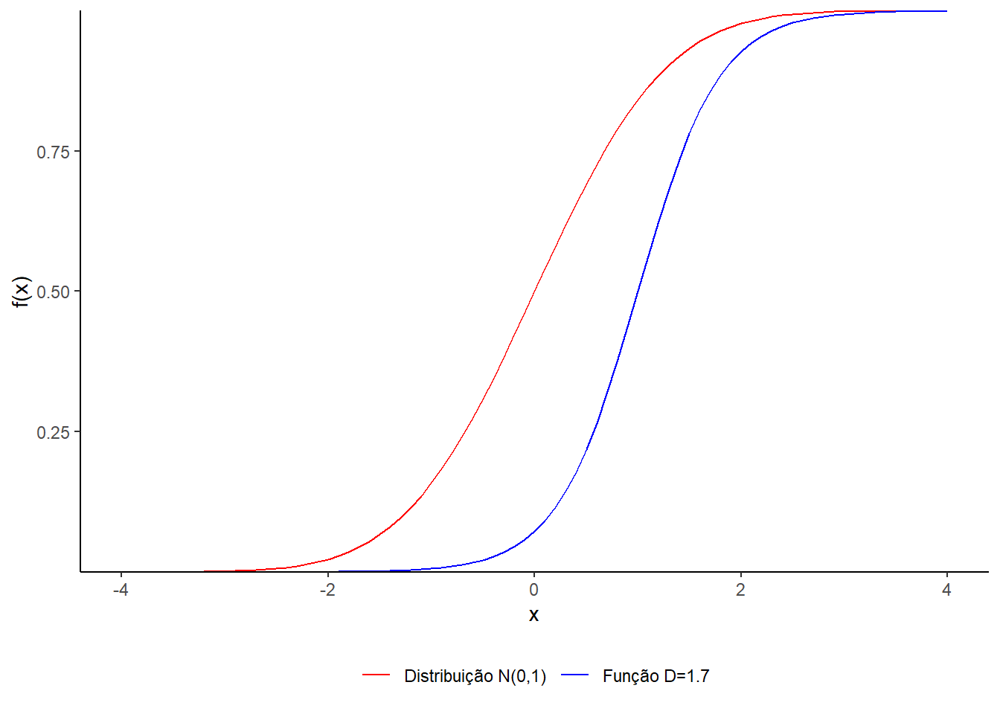
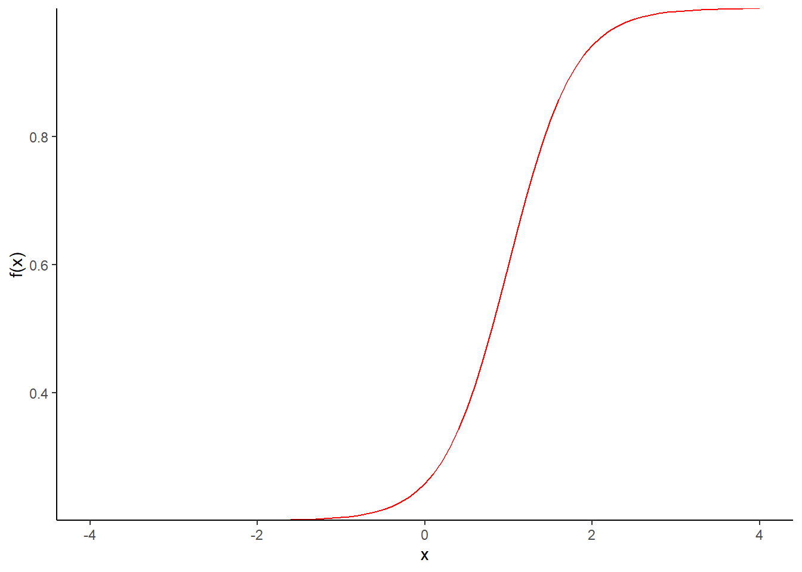
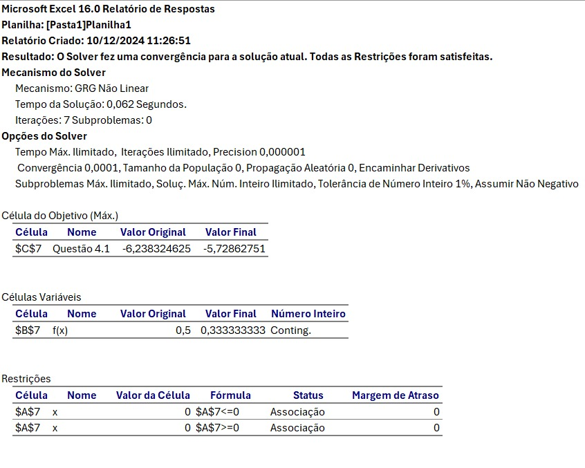

Figura 1.1 - Gráfico da função \(f(x)=x^2-5x+6\), \(x \ ε \ [0,4]\)
library(ggplot2)x <-seq(0, 4, by =0.01)y <- x^2-5*x +6dados <-data.frame(x = x, y = y)ggplot(dados, aes(x = x, y = y)) +geom_line(color ="red") +geom_hline(yintercept =0) +labs(x ="x", y ="f(x)") +theme(panel.background =element_blank(),axis.line =element_line())+scale_x_continuous(expand =c(0, 0))

Figura 1.2 Gráfico da função \(f(x)= \text{densidade da N(0,1)}\) e \(\text{Distribuição Acumulada da N(0,1)}\)
library(ggplot2)x <-seq(-4, 4, by =0.1)densidade <-dnorm(x, mean =0, sd =1)distribuicao <-pnorm(x, mean =0, sd =1)dados <-data.frame(x = x, densidade = densidade, distribuicao = distribuicao)ggplot(data = dados) +geom_line(aes(x = x, y = densidade, color ="Densidade")) +geom_line(aes(x = x, y = distribuicao, color ="Distribuição Acumulada")) +labs(x ="x", y ="f(x)") +scale_color_manual(values =c("Densidade"="red","Distribuição Acumulada"="blue")) +theme(panel.background =element_blank(),axis.line =element_line(),legend.title =element_blank(),legend.position ="bottom") +scale_y_continuous(expand =c(0, 0))

Figura 1.3. Gráfico da função \(f(x)=\frac{1}{1+\exp(-D \cdot a \cdot (x-b))}\), com \(a=1.5\), \(b=1\), para \(D=1\) e \(D=1.7\)
library(ggplot2)a <-1.5b <-1x <-seq(-4, 4, by =0.1)f_D1 <-1/ (1+exp(-1* a * (x - b)))f_D17 <-1/ (1+exp(-1.7* a * (x - b)))dados <-data.frame(x =rep(x, 2),y =c(f_D1, f_D17),D =factor(rep(c("D=1", "D=1.7"), each =length(x))))ggplot(dados, aes(x = x, y = y, color = D)) +geom_line() +labs(x ="x", y ="f(x)") +scale_color_manual(values =c("D=1"="red", "D=1.7"="blue")) +theme(panel.background =element_blank(),axis.line =element_line(),legend.title =element_blank(),legend.position ="bottom") +scale_y_continuous(expand =c(0, 0))

Figura 1.4. Comparando a função de distribuição \(N(0,1)\) com a função \(f(x)=\frac{1}{1+\exp(-D \cdot a \cdot (x-b))}\), com \(a=1.5\), \(b=1\), para \(D=1.7\).
library(ggplot2)a <-1.5b <-1x <-seq(-4, 4, by =0.1)distribuicao_normal <-pnorm(x, mean =0, sd =1)f_D17 <-1/ (1+exp(-1.7* a * (x - b)))dados <-data.frame(x =rep(x, 2),y =c(distribuicao_normal, f_D17),Funcao =factor(rep(c("Distribuição N(0,1)", "Função D=1.7"),each =length(x))))ggplot(dados, aes(x = x, y = y, color = Funcao)) +geom_line() +labs(x ="x", y ="f(x)") +scale_color_manual(values =c("Distribuição N(0,1)"="red","Função D=1.7"="blue")) +theme(panel.background =element_blank(), axis.line =element_line(),legend.title =element_blank(), legend.position ="bottom") +scale_y_continuous(expand =c(0, 0))

Figura 1.5. Gráfico da função \(f(x)=c + \frac{1-c}{1+\exp(-D \cdot a \cdot (x-b))}\), com \(a=1.5\), \(b=1\), \(c=0.2\), \(D=1.7\)“,
library(ggplot2)a <-1.5b <-1c <-0.2D <-1.7x <-seq(-4, 4, by =0.1)f_x <- c + (1- c) / (1+exp(-D * a * (x - b)))dados <-data.frame(x = x, y = f_x)ggplot(dados, aes(x = x, y = y)) +geom_line(color ="red") +labs(x ="x", y ="f(x)") +theme(panel.background =element_blank(), axis.line =element_line()) +scale_y_continuous(expand =c(0, 0))

Figura 1.6. Gráfico da função densidade da N(0,1) refletida \((-f(x))\) junto com 3 funções logísticas com parâmetros \(\zeta = (a, b, c)\) dados por (1 ,.5, 0.2), (1, 1.5, 0.2) e (2, 1.5, 0.2)
4.2-\(P(U = x) = p^x (1 - p)^{1 - x}\) e uma amostra \((x_1, \ldots, x_{10}) = (0, 1, 0, 0, 1, 0, 0, 0, 1, 0)\) apos a construção da função de verossimilhança (produto das probabilidades). Usado Suplemento Solver para obter o valor de \(p\) que maximiza a verossimilhança.

5.Gerenciamento de Bases de Dados no EXCEL
Realizado o gerenciamento de um banco de dados no Excel utilizando macro VBA. Durante esse processo, geramos um código que contém as respostas correspondentes às alternativas escolhidas pelos participantes do ENEM 2017, no caderno azul, referentes às questões de matemática. O arquivo está no formato de texto formatado, com os valores separados por espaços